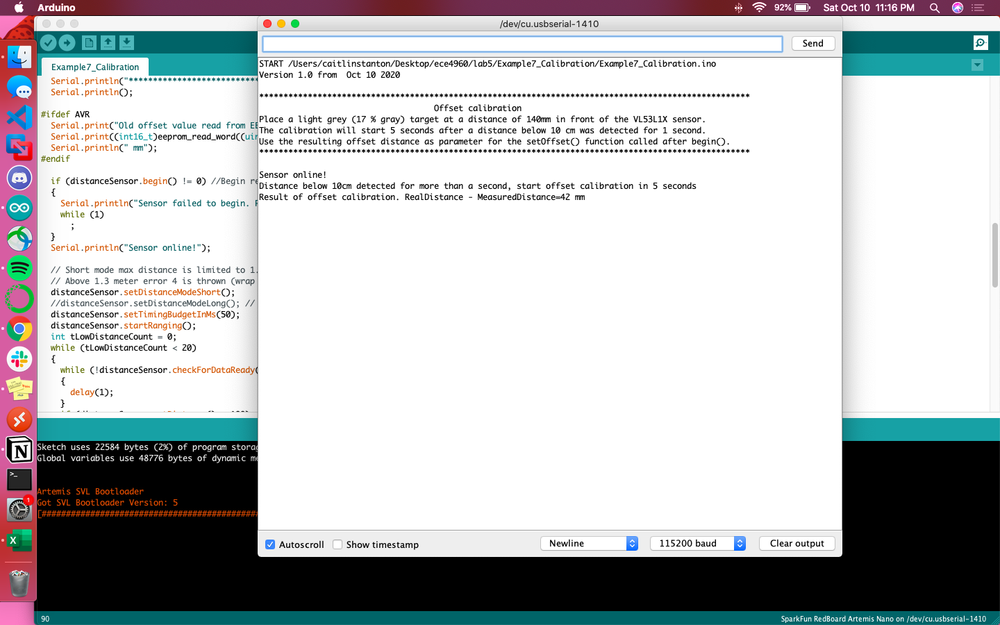

Lab 5
Obstacle Avoidance
Last lab we implemented open loop control, and this lab was meant to build from that motion to perform obstacle performance. This was done through distance sensors, specifically a proximity sensor and time-of-flight sensor.
The first sensor to look at was the VCNL4040 proximity sensor. It specifically comprises features that make it equivalent to the combination of a proximity sensor (PS), ambient light sensor (ALS), and a high power IRED. It’s primarily meant to detect if an object has passed in front of the sensor, rather than output the specific distance to the aforementioned object.
The sensor is controlled by I2C communication, specifically over address 0x60. This was noted both on the Sparkfun product page and after running the Arduino Wire sketch to locate any I2C connections.
To better understand the sensitivity of the sensor, I ran multiple trials passing objects in front of it and varying their color and distance. I did this with the array of objects seen below (a paper that’s white on one side and gray on the other; a black planter; a brown planter; purple translucent Tupperware; and a glass jar). I placed each on the coordinate grid at (0,6), (0,0), and (0,-6) and ran the Example4_AllReadings file with direct ambient light and with no direct ambient light (aka my living room light being on vs off). The measurements for no object with the light on was 15 and with the light off was 17.
In order to calculate the frequency of measurements and the length of time to read them, I added the following code to the loop function:
unsigned long start = micros(); unsigned int proxValue = proximitySensor.getProximity(); unsigned long length = micros() - start; Serial.println(length);
After gathering a sample size of around 200 readings, the average length of time to read the sensor’s value was determined to be 630 μs with a standard deviation of 0.167.
Similar to the proximity sensor, the VL53L1X ToF sensor uses I2C. Its address was 0x29, which isn’t what the datasheet indicated. However, there isn’t necessarily an error with this because the address is programmable and therefore can be changed.
I ran the same series of experiments as with the proximity sensor to gauge the range of readings, except with the ToF sensor I didn’t vary the amount of ambient light. This was due to the fact that the ToF sensor doesn’t have any circuitry related to measuring the amount of light, so ambient light shouldn’t have an effect on the measurements.
Below are two graphs for comparison: the first is pre-calibration and the other post. I determined the sensor needed to be calibrated because the outputs of the sensor are meant to be an accurate representation of the distance to the object, but they were drastically different than what the coordinate grid indicated. For instance, the uncalibrated sensor gave an average reading of 505mm when no object was in front of it, while the calibrated sensor gave an average of 857mm; the latter is more accurate since a couch was in the sensor’s path maybe two feet away.
Something to note with the calibration code is that the example Arduino file (Example7_Calibration) didn’t work in its original form. It required a call to distanceSensor.startRanging(); before any data could be collected to trigger the calibration sequence.
Once that bug was sorted out, the range of calibration was 41mm; in any future programs that require readings from the ToF sensor, I had to make sure to call distanceSensor.setOffset(41); before any data was gathered.
The average maximum speed of the car is 2.68 meters per second, as determined from the class’s collective dataset. This means that every 10cm can be travelled in around 37ms. 10cm seems like a solid buffer for object avoidance, so I adjusted the timing budget and inter measurement period values to 35 and 5 respectively with the setup() function (adding even a little bit more buffer).
distanceSensor.setTimingBudgetInMs(35); distanceSensor.setIntermeasurementPeriod(5);
The ToF sensor has three distance modes—short, 1.3m; medium, 3m; and long, 4m—so to choose which one to proceed with, I calculated the length of time it would take to cover those distances. With the average maximum speed of 2.68 m/s in mind, it would take 0.485s, 1.12s, and 1.49s, respectively. Given that the timing budget and inter measurement period summed up to 40ms, 500ms was more than enough of a window for reaction so I called distanceSensor.setDistanceModeShort(); within setup() to optimize the ranging performance given the maximum expected range.
Next came stress testing in the form of understanding how a moving object will affect the sensor’s readings. I chose three modes of movement: side to side, up and down, and forward and back. Moving my hand side to side resulted in “Range Status: Wrapped target fail” errors 19% of the time and “Range Status: Signal fail” almost 2% of the time. The up and down motion resulted in a “Wrapped target fail” error rate of 17% and “Signal fair” error rate of 1%. When moving my hand forward and backward, the error “Range Status: Wrapped target fail” appeared almost 2% of the time. Though the error ranges were relatively small, the fact that they existed at all when handling moving objects is a critical trend to keep in mind, especially as we control a moving object itself. If the environment is full of moving objects and the robot is going fast, measurements will fail more often and the code must be more robust to accommodate this.
The ranging time was 48.5ms on average with a standard deviation of 1.73. I found this value using the code below:
void setup(void) { Wire.begin(); Serial.begin(115200); Serial.println("VL53L1X Qwiic Test"); //VL53L1_SetInterMeasurementPeriodMilliSeconds(&VL53L1Dev, 1000 ); if (distanceSensor.begin() != 0) //Begin returns 0 on a good init { Serial.println("Sensor failed to begin. Please check wiring. Freezing..."); while (1) ; } Serial.println("Sensor online!"); distanceSensor.setTimingBudgetInMs(35); distanceSensor.setIntermeasurementPeriod(5); distanceSensor.setDistanceModeShort(); distanceSensor.startRanging(); } void loop(void) { long startTime = millis(); while (!distanceSensor.checkForDataReady()) { delay(1); } int distance = distanceSensor.getDistance(); distanceSensor.clearInterrupt(); long endTime = millis(); Serial.print("Distance(mm): "); Serial.print(distance); float distanceInches = distance * 0.0393701; float distanceFeet = distanceInches / 12.0; Serial.print("\tDistance(ft): "); Serial.print(distanceFeet, 2); Serial.print("\tRanger time: ,"); Serial.print((float)(endTime - startTime), 2); Serial.println(); }
Distance readings in ambient light for the same five objects as in the previous trials can be found below:
With the addition of two new sensors, Klaus had to be reorganized a bit. I routed another Qwiic connected from the motor driver stored within the chassis to outside, and daisy chained the IMU, proximity sensor, and ToF sensors with the Artemis Nano. To allow the robot to “see” where it’s going, I fixed the proximity and ToF sensors to the front of the robot using strips of cardboard.
After running some iterations of the obstacle avoidance code, I realized that the robot would perform correctly when suspended on a cup (i.e. stopping its wheels when my hand passed in front of the sensors) but not when moving on the ground. Adjusting the sensors with a zip tie to be angled more upwards fixed this, as the sensors were sensing the floor below them and therefore not even starting the wheels.
I built off my existing motion functions from previously labs to include brakeForwards(), brakeBackwards(), and stopWheels().
#include <Arduino.h> #include <stdint.h> #include "SCMD.h" #include "SCMD_config.h" //Contains #defines for common SCMD register names and values #include <ComponentObject.h> #include <RangeSensor.h> #include <SparkFun_VL53L1X.h> #include <vl53l1x_class.h> #include <vl53l1_error_codes.h> #include <Wire.h> #include "SparkFun_VL53L1X.h" #include "SparkFun_VCNL4040_Arduino_Library.h" VCNL4040 proximitySensor; //Optional interrupt and shutdown pins. #define SHUTDOWN_PIN 2 #define INTERRUPT_PIN 3 SCMD myMotorDriver; //This creates the main object of one motor driver and connected slaves. SFEVL53L1X distanceSensor; //Uncomment the following line to use the optional shutdown and interrupt pins. //SFEVL53L1X distanceSensor(Wire, SHUTDOWN_PIN, INTERRUPT_PIN); void setup(void) { Serial.begin(115200); //motor setup myMotorDriver.settings.commInterface = I2C_MODE; myMotorDriver.settings.I2CAddress = 0x5D; //config pattern is "1000" (default) on board for address 0x5D myMotorDriver.settings.chipSelectPin = 10; //*****initialize the driver get wait for idle*****// while ( myMotorDriver.begin() != 0xA9 ) //Wait until a valid ID word is returned { Serial.println( "ID mismatch, trying again" ); delay(500); } Serial.println( "ID matches 0xA9" ); // Check to make sure the driver is done looking for slaves before beginning Serial.print("Waiting for enumeration..."); while ( myMotorDriver.ready() == false ); // motor 1 inversion so that forward is the same for both motors while ( myMotorDriver.busy() ); //Waits until the SCMD is available. myMotorDriver.inversionMode(1, 1); //invert motor 1 while ( myMotorDriver.busy() ); myMotorDriver.enable(); // sensor setup Wire.begin(); if (proximitySensor.begin() == false) { Serial.println("Device not found. Please check wiring."); while (1); //Freeze! } if (distanceSensor.begin() != 0) //Begin returns 0 on a good init { Serial.println("Sensor failed to begin. Please check wiring. Freezing..."); while (1); } Serial.println("Sensors online!"); distanceSensor.setOffset(41); distanceSensor.setTimingBudgetInMs(35); distanceSensor.setIntermeasurementPeriod(5); distanceSensor.setDistanceModeShort(); distanceSensor.startRanging(); } void brakeForwards() { myMotorDriver.setDrive(0,0,255); //drive right motor myMotorDriver.setDrive(1,0,255); //drive left motor } void brakeBackwards() { myMotorDriver.setDrive(0,1,255); //drive right motor myMotorDriver.setDrive(1,1,255); //drive left motor } void stopWheels() { myMotorDriver.setDrive(0,1,0); //drive right motor myMotorDriver.setDrive(1,1,0); //drive left motor }
I utilized this within a while loop to see how fast the motors could go while adequately responding to “seeing” an obstacle.
void loop(void) { while (!distanceSensor.checkForDataReady()) { delay(1); } int distance = distanceSensor.getDistance(); //Get the result of the measurement from ToF sensor byte rangeStatus = distanceSensor.getRangeStatus(); if(rangeStatus==0) { if((distance==0 || distance>300) && proxValue<80) { forward(); } else { brakeForwards(); delay(200); stopWheels() while(1); } } }
Next the code was fleshed out to incorporate the proximity sensor and institute right hand wall follow. The latter didn’t come to full fruition (meaning turns weren’t 90 degrees, so the robot didn’t follow the wall) due to a frayed battery wire, but obstacle avoidance was achieved.
void loop(void) { while (!distanceSensor.checkForDataReady()) { delay(1); } int distance = distanceSensor.getDistance(); unsigned int proxValue = proximitySensor.getProximity(); distanceSensor.clearInterrupt(); byte rangeStatus = distanceSensor.getRangeStatus(); if(rangeStatus==0) { if((distance==0 || distance>300) && proxValue<80) { forward(); } else { brakeForwards(); delay(200); turnRight(); delay(1000); } } }
Note: there's a chair just out of frame that the robot is reacting to
Much like the previous lab, the physical environment was replicated within the virtual environment, utilizing Jupyter notebook and Python code for controlling virtual Klaus.
This started with baseline functions for movement and sensing. check_front() relied on the function get_laser_data from the robot class, which would return the distance to any object in the robot’s field of view. I determined 1 to be a valid threshold for avoidance, hence the if condition. turn_right() and turn_left() are self-explanatory, relying on setting the angular velocity.
The overall perform_obstacle_avoidance() function is implementing a right hand wall follow algorithm. If the robot doesn’t sense anything in front of it, it continues moving forward, otherwise it turns right. If an object can be detected then, the robot will turn to check to the left of it, otherwise it continues forward. If there’s still an object, it returns in the opposite direction from which it came.
def check_front(robot): return (robot.get_laser_data() < 1) def turn_right(robot): robot.set_vel(0,-50) time.sleep(1) def turn_left(robot): robot.set_vel(0,50) time.sleep(1) def perform_obstacle_avoidance(robot): while True: # Obstacle avoidance code goes here if (check_front(robot)): turn_right(robot) robot.set_vel(0,0) time.sleep(1) if (check_front(robot)): turn_left(robot) turn_left(robot) robot.set_vel(0,0) time.sleep(1) if (check_front(robot)): turn_left(robot) robot.set_vel(0,0) time.sleep(1) else: robot.set_vel(1,0) time.sleep(1) else: robot.set_vel(1,0) time.sleep(1) else: robot.set_vel(1,0) time.sleep(1) perform_obstacle_avoidance(robot)
All sleep commands after set_vel() were set to 1 second, allowing for crisp 90 degree turns and straight forward movement. There was the option to have smaller turns if the robot detected an obstacle, which would lead to less deterministic and slower movement. I wanted to be able to easily debug the robot’s movements, hence 90 degree turns at obstacles.
A linear velocity of 1 with a time.sleep(1) was easy to predict. It also allowed for the robot to sometimes slide along the walls, rather than collide with them, since this set_vel() command spanned around the length of a grid square.
Something to note, as seen in the video below, is that although the code is valid in its logic, there is drift. This drift does eventually lead to collisions. A potential fix is to use while loops instead of time.sleep to determine how long to turn for. This will lead to more granular degrees of rotation, rather than exact 90 degree turns.
Making a physical or virtual object autonomous is easier said than done. Reliance on sensors for data to respond to will make your code vulnerable to noise and errors. Calibration and robust logic can prevent some of these potential failures, but the world will always throw a curveball at you, whether it’s in the configuration of the robot or its external environment.